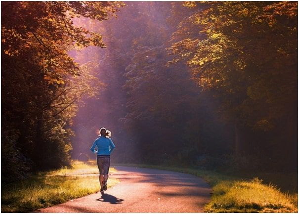
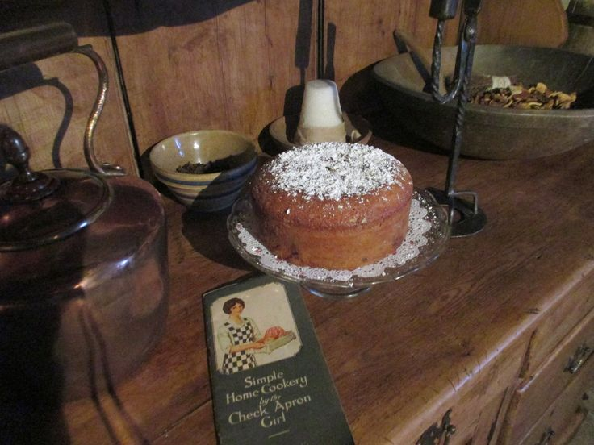
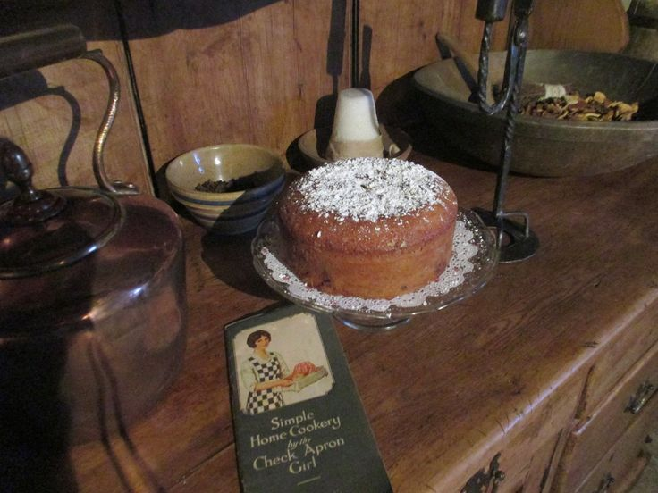

Sports & Fitness
I enjoy staying active by going for a run and practicing basketball regularly. It keeps me refreshed and energized.

Creative Hobbies
In my free time, I love painting and exploring digital art. Creativity helps me express myself.

Intellectual Interests
Reading mystery novels is a favorite pastime, as well as baking too.
 

Travel & Exploration
I enjoy traveling to new places and learning about different cultures. My dream destination is Greece.